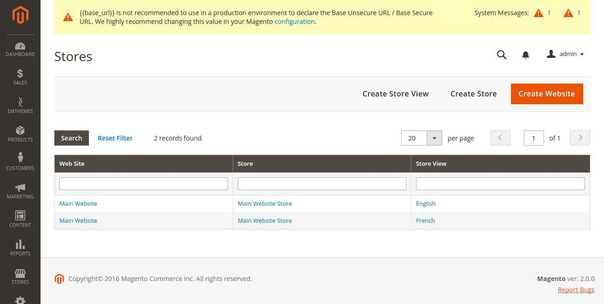

Documentation
Stores
You can read this article to learn more about Website, Store and Store View in Magento:
http://docs.magento.com/m2/ce/user_guide/stores/websites-stores-views.html/
One of Magento’s advanced features is to allow management of multiple websites and stores within one installation.
- Website: Websites are ‘parents’ of stores. A website consists of one or many stores. Websites can be set up to share customer data, or not to share any data
- Store (or store view group): Stores are 'children' of websites. Products and Categories are managed on the store level. A root category is configured for each store view group, allowing multiple stores under the same website to have totally different catalog structures.
- Store View: A store needs one or more store views to be browse-able in the front-end. The catalog structure per store view will always be the same, it simply allows for multiple presentations of the data in the front. 90% of implementations will likely use store views to allow customers to switch between 2 or more languages.
To manage stores in Magento, go to Stores > Settings > All Stores

1. To Create Website
Back to topStep 1: Click the Create Website button to display the New Website page
Step 2: Under Website Information, do the following:
- Write a meaningful Name for the website
- Use lower-case characters, type a Code to identify the website.
- (Optional) If you have more than one website, enter a number in the Sort Order field to determine the sequence. The website with a sort order of 1 is the default website
Step 3: When you complete, click the Save Website button
2. To Create A Store
Back to topStep 1: Click the Create Store button to display the New Store page
Step 2: Under Store Information, do the following:
- Select Website where store belongs to
- Write a meaningful Name for the store.
- Select 'Root Category' of this store, please read more in the section root category
Step 3: When you complete, click the Save Store button
2. To Create A Store View
Back to topStep 1: In the Admin menu, select System > Manage Stores. Click the Create Store View button to display the New Store View page.
Step 2: Under Store View Information, do as follow:
- Set Store to 'Main Store.'
- Write a meaningful Name to the store view. (For example: English.).
- Using lower-case characters, type a Store Code to identify the store. The store code is for internal reference and should make sense to you
- Set Status to 'Enabled' to activate the store view.
- (Optional) If you have more than one store view, enter a number in the Sort Order field to determine the sequence in which it appears when listed with other views. The store with a sort order of 1 is the default view
Step 3: When you complete, click the Save Store View button